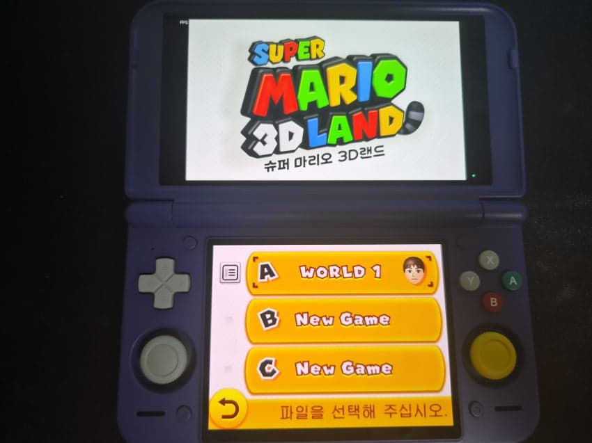
공홈 예구해서 드디어 받아본 듀오
과연 듀얼스크린 종결이 될것인가
1. 디자인
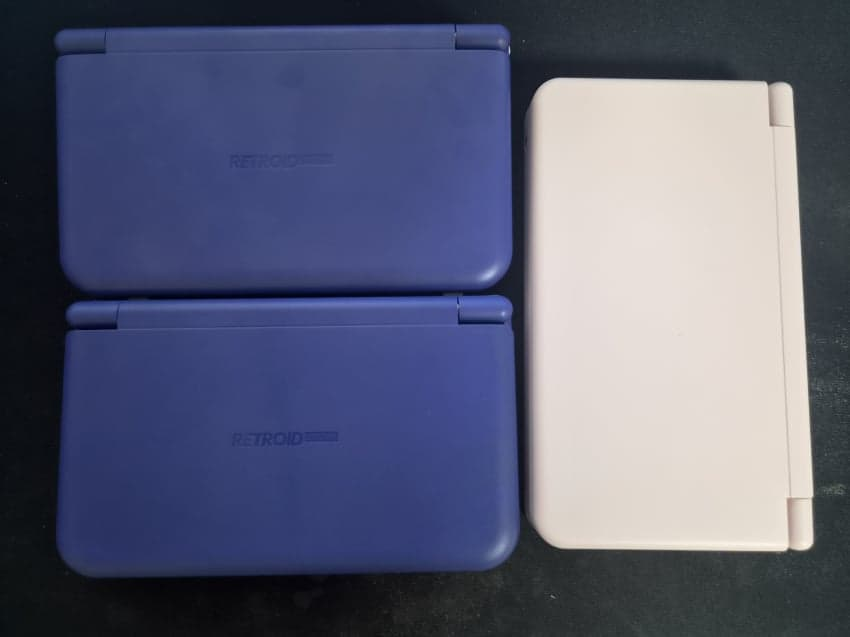
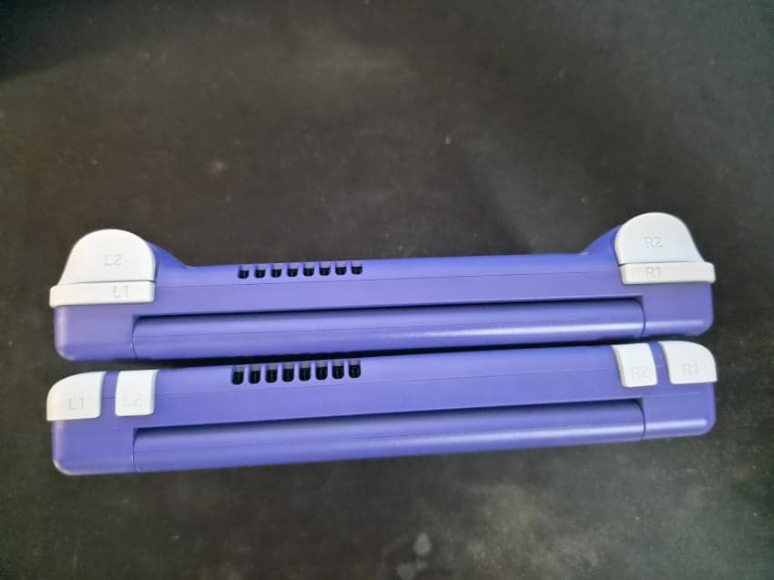
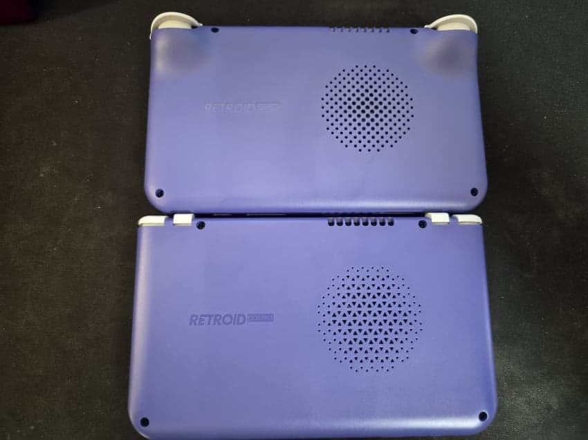
전에 리뷰한 듀라와 매우 비슷하게 생겻다.
하지만 부피는 더 크고, 두께는 얇다
듀라의 플랫한 디자인에서, 아날로그트리거를 위해 숄더버튼이 더 두꺼운 디자인으로 되었다.
후술하겠지만, 이부분이 호불호가 갈리는 부분인데, 개인적으론 호가 되었다
2. 크기 및 무게
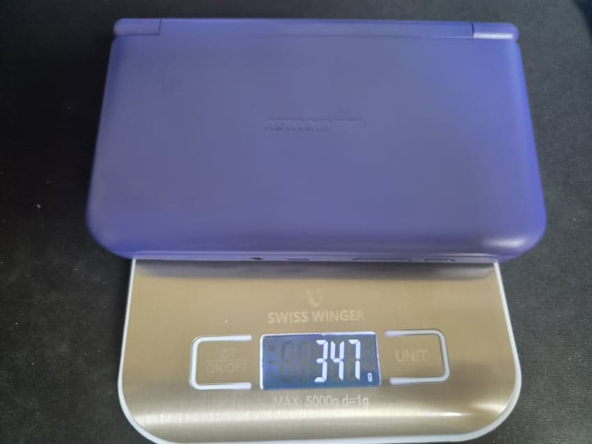
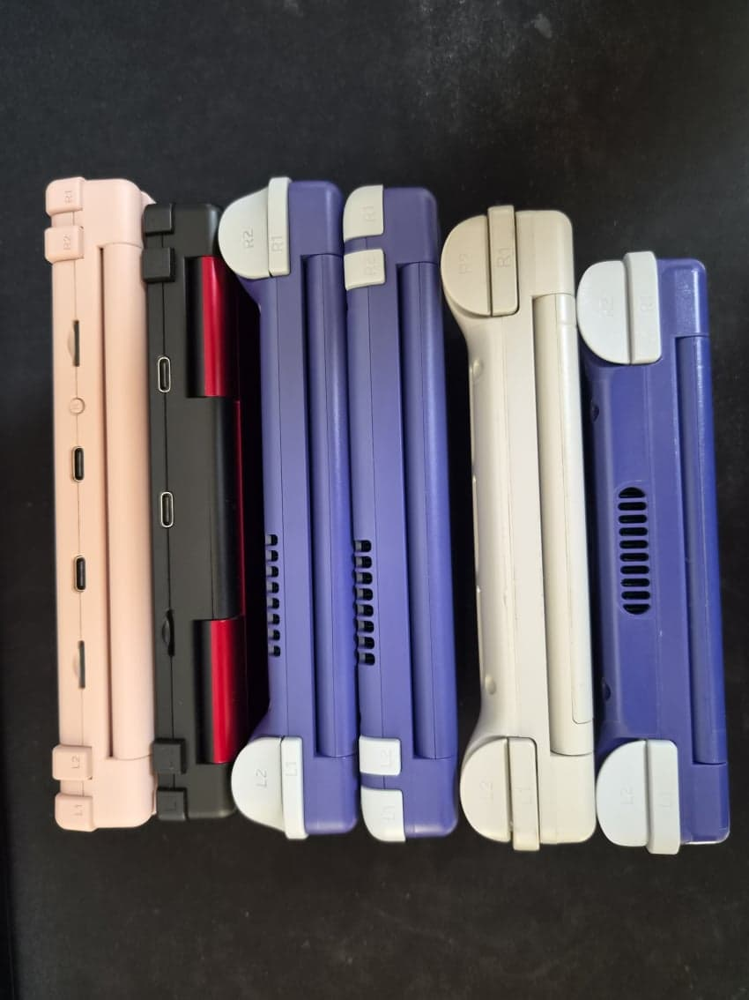
347그람으로 도르마보다 가볍다!
듀얼스크린 기기중에선 상당히 가벼운 축에 속한다.
또한, 부피가 상당히 큰데 가벼운거라, 체감무게가 더욱 가볍다
위 기기에서는 실체감무게가
도르<플립2<듀오=도르마<듀라<토르 순이다.
아무튼 무게 민감한 나로썬 매우 합격수준(정확히는 커트라인수준) 무게이다.
누워서 플레이 가능수준
다만 케이스 낀다면 얘기 달라진다. 난 낄생각 없음.
3. 그립감
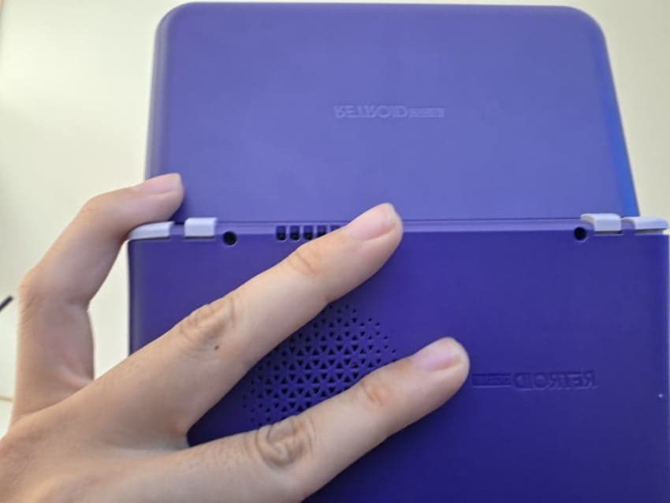
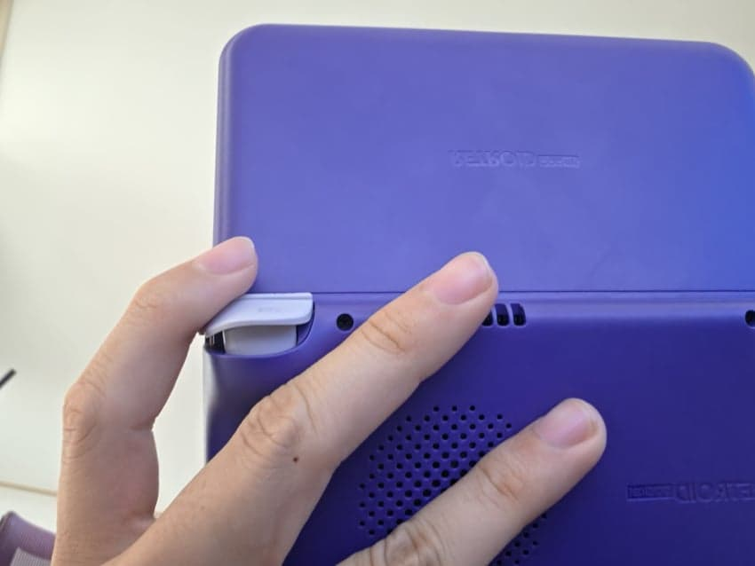
놀랍게도 듀라만큼 구리진 않았다.
비슷하게 생겻는데 뭔 개소리냐 할수도 있는데, 저 숄더 트리거의 튀어나온 구조덕분에, 걸리는 부분이 있어 듀라처럼 아무것도 지탱 못하는 구조보다 훨씬 좋은 구조다.
위 사진은 좌하단 아날로그 조작시 후면 사진인데, 보다시피 중지 위치가 딱 트리거 부분을 받춰줄 수 있어 듀라에 비하면 훨씬 쾌적하다.
4. 전면조작부
디패드와 abxy는 괜찮은편.
의외인건 abxy버튼이 듀라와 다른 부품으로 보인다.
듀라버튼보다 살짝 소음이 있는편
키감 자체는 비슷하다.
아날로그스틱은 듀라와 동일한 부품이지만, 구동범위 상 아날로그 조작할 일이 더 많아 불편함이 체감된다.
위 그립감 영역에서 얘기했듯 하단 스틱이 못쓸정도는 아니지만, 대가리가 크고 깊어서 조작시 정밀 조작까진 모르겠다만, 손가락이 쉘에 닿아서 끝까지 못 미는 상황이 종종 나왔다.
우아날도 마찬가지 더 조작하기 어려웠다
5. 숄더버튼
괜찮은편. 듀라는 l1r1이 너무조그만하고 끝에있어 조작하기 불편했는데, 얜 버튼이 넓어서 더 조작하기 편했다.
아날로그 트리거는 인라인 트리거랑 호불호는 갈릴지 언정, 토르의 구린 구조보다는 훨씬 나았다.
6. 화면
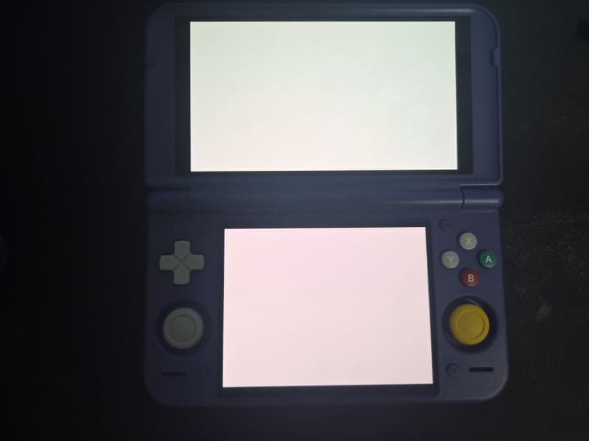
OLED 120HZ의 듀얼 디스플레이 구조 자체는 좋았으나, 상단 패널 화이트 밸런스가 맘에들지 않는다 .
레트로이드는 항상 붉은빛 OLED를 사용했엇는데, 상단은 푸른빛이 돈다.
이게 따로보면 모르겠다만, 동시에 보게되면 이질감이 많이 든다.
7. 스피커
레트로이드 중 최상급 스피커 아닌가 싶다.
기분탓인지 모르겠는데 듀라는 살짝 찢어지는 느낌의 소리가 낫는데, 듀라보다 좀더 깔끔한 소리라고 생각된다.
8. 발열 및 팬소음
일단 팬은 매우 조용한 편이다. 가장 쎄게켜도 상당히 조용한 편. 발열은 심하지 않은편인데, 테스트하다 한번 80도정도 까지 올라갓엇는데 뭐하다 올라갓는진 까먹음
일반적으론 그리 크게 올라가지 않는거같다
9. 배터리
고성능 게임시 평균 5와트 정도 전력이 나간다.
6천미리 배터리니, 플레이타임은 약 4-5시간이라 볼 수 있다.
이정도면 훌륭하지.
충전도 25와트씩 충전되서 빠르다.
10. 소프트웨어
특별할거 없는 레트로이드 소프트웨어다.
하단은 듀라처럼 제어패널을 띄울수 있는데, 듀라때와 마찬가지로 디자인이 아쉽다.
그리고 버그인지 모르겟는데, 터치스크린 상단에 패드 고정하고 게임하다 하단 패널 부르고, back키 입력시 에뮬메뉴 호출이 안될 때가 있다.
이유는 모르겟음
그리고 레트로이드랑 관계있는건 아니지만, nds에뮬이 만족스럽지가 않다.
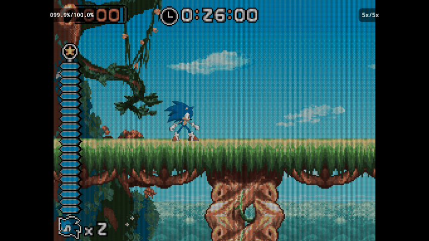
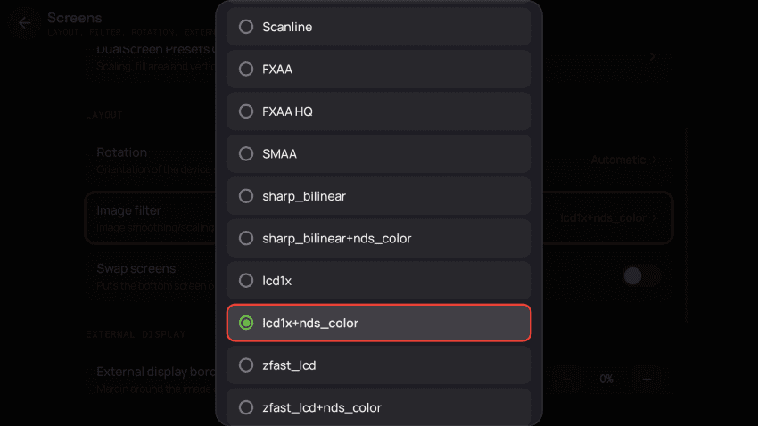
우선 seedlessds에서 사용하는 nds1x+nds_color이다.
내가 원하는 색감이 딱 이거임.
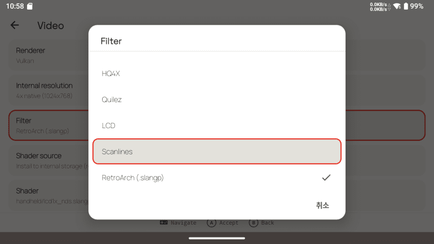
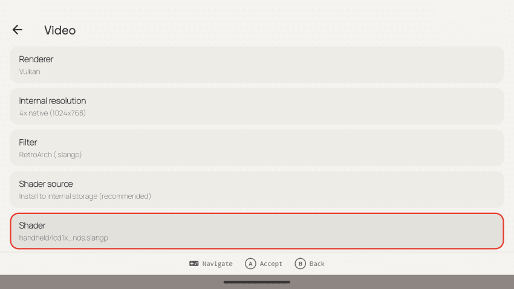
워터멜론ds에는 기본적으로 해당 쉐이더가 없다.
그래도 레트로아크 쉐이더 지원하니 오히려 좋아.. 하고
레트로아크네서 동일 쉐이더인 lcd1x+nds 쉐이더를 입혔더니
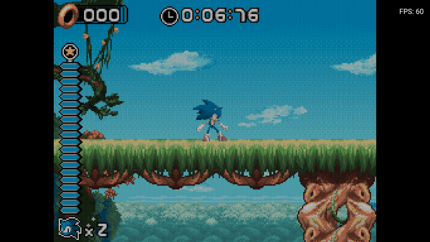
이런 미친 정신나간 쉐이더가 강제로 1배로 만들어버린다.
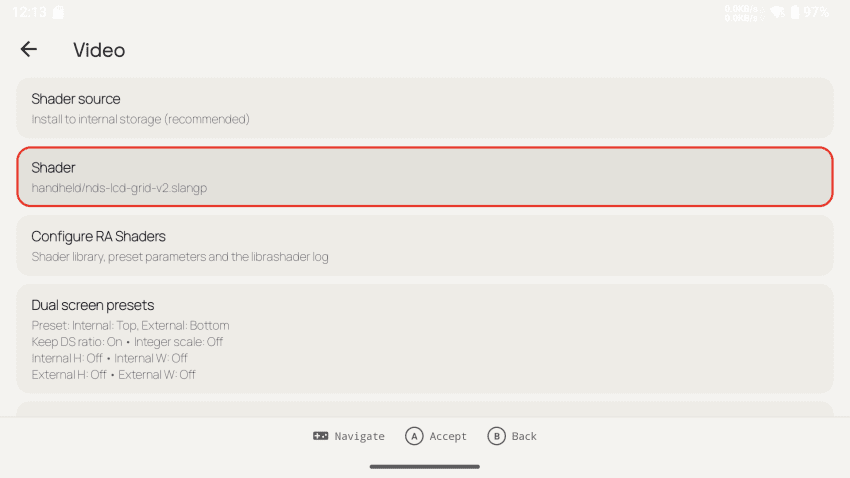
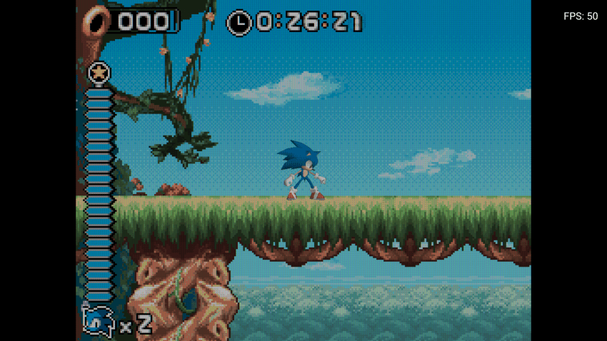
그래서 비슷하게 lcd효과 주는 쉐이더에 nds컬러가 있는 v2를 적용했더니 왠걸
프레임이 박살낫다(우상단 50프레임)
동일 효과를 토르에서 주면 잘된다
꼴랑 nds따위 때문에 성능이 아쉽게 느껴져버렸다.
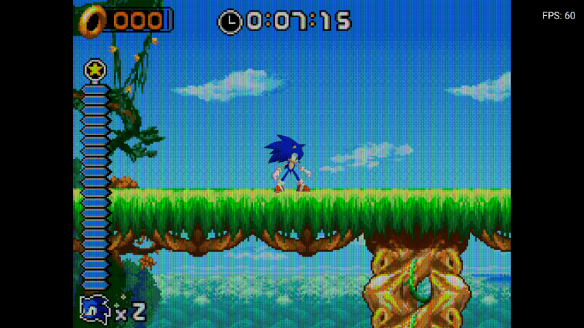
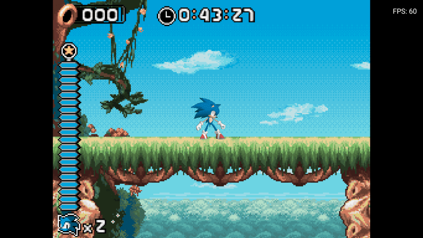
결국 남은건, lcd효과냐 nds색감이냐 두개인데, 쨍한게 싫어서 결국 nds컬러만 쓰고 있다.
그럼 여기서 처음에 얘기한 seedlessds쓰면 되는거 아니냐? 할 수 있는데
seedlessds는 배속기능 사용시, 프레임이 스킵되어 툭툭 끊긴다.
워터멜론 ds는 스무스하게 배속이 되서 더 자연스럽다.
다만 여기서 또 문제는, 워터멜론ds에 내가 셋팅한 4배+nds컬러 시 약 2배속까지밖에 안됨..
물론 내가 셋팅을 잘못한 걸 수도 있지만, 여러모로 nds 에뮬쪽이 아쉽다. 레트로아크가 듀얼스크린 지원하면 멜론코어로 돌려보는게 더 나을거같음
11. 성능
3ds구동 영상은 전에 올린 글 참고바란다.(게시글 영상 3개제한)
루이지맨션급이 아니면 3배로 스터터링 없는 수준으로 게임이 가능하다.
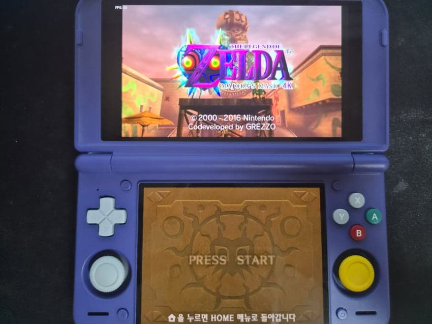
텍스처팩도 일부 적용이 가능하다.
포켓몬 울썬문은 파일이 많아서 그런지 안됫음.(토르는 됨)
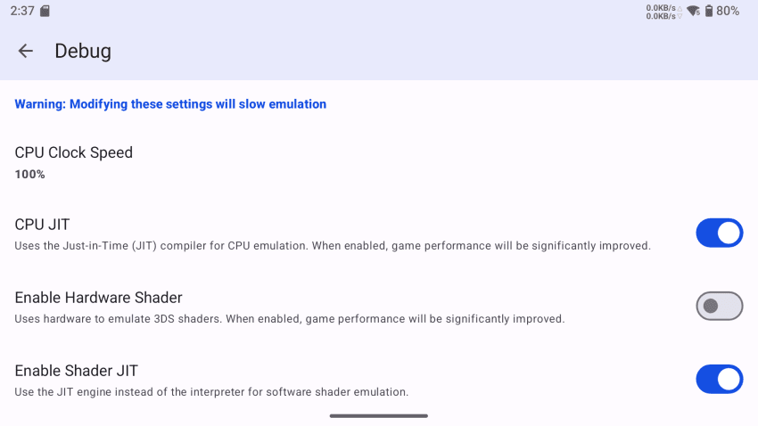
셋팅도 크게 할 거 없다. enable hardware shader 저거 하나만 끄면 스터터링 없는 3ds를 할 수 있다.
다만, 몬헌xx는 저거 끄면 로딩시 팅긴다.
아자하가 게임 개별 옵션을 지원 안해서, 저런 겜만 추려서 시트라 등등으로 하면 되지 않을까 싶다.
NDS 구동영상(워터멜론DS / 4배+NDS컬러)
소닉러쉬 슬로우모션+젤다 몽모+ 리듬천국
슬로모션으로 보면 아주 미세하게 상하단 싱크가 안맞는다.
근데 이거 120프레임으로 셋팅한 상태로, 60프레임으로 하면 육안으로도 조금 틀어짐을 느낄 수 있다. 120액정이라 이득본 부분
젤다 몽모로 터치 반응을 보자. 역시 듀라같은 애들보단 훨씬 반응이 빠르다.
이역시 120프레임의 이점이라고 생각된다.
마지막으로 리듬천국.
기분탓?인지 실력이 는건지 모르겟는데 싱크도 잘맞고 튕기기 동작도 잘된다.
다음은 고성능게임 모음
turnip faux123 1.2.10
ps2 완다와거상/갓오브워2 2배율
wii u 바람의 지휘봉
ns 야숨/왕눈
안드 이환 중옵
에뮬쪽 성능은 865보다 부족하다.
완다는 일부장면에서 프레임드랍, 갓옵워도 계산량 많아지면 프레임드랍이 생긴다.
바람의 지휘봉은 평균 20-25프레임 왓다갓다한다. 그래도 할만한 수준.
위유 철권태그2도 비슷한 프레임이 나온다. 못한단 소리지.
왕눈 초반만 해보고 30프레임 나오네? 했는데 필드 가니 프레임드랍이 있다.
야숨도 마찬가지. 쾌적한 플레이는 안된다.
드라이버가 빨리 발전해서 865 따잇했으면 좋겠는데, 범용칩셋이 아니라 개발이 얼마나 빠를진 모르겠다.
안드겜은 잘 몰라서 원신/이환정도만 해봣는데
원신은 패드 공식지원이 아니라 불편해서 유기
이환은 상당히 잘돌아간다.
cpu 온도도 60이 넘질 않음
결론은 안드겜 안하는 입장에서 쓸데없이 7젠4 박지말고 865나 박고 나왓으면 더 좋앗을거같다.
드라이버 발전을 기다리자.
12. 하드웨어 마감
액정문제와 스틱문제 빼고는 큰 문제는 없다.
사소한 문제지만 볼륨과 전원 사이를 누르면 버튼 누르는거마냥 또각 소리가 난다(레딧에서 봄)
내꺼에서도 실험해보니, 듀라는 안나는데 듀오만 난다. 뭔짓을한거지?
13. 가성비
솔직히 금액대가 있는 제품이나, 목표인 3ds를 원할하게 즐기기 위한 용도로는 좋다고 생각한다.
그 이상을 원한다면, 드라이버 발전을 기다리거나 토르로 가야한다.
문제점도 많이 짚었지만, 개인적으로 만족도는 상당히 높은 기기
장점
oled 120hz 듀얼스크린
넓은 하단 화면
듀얼스크린 치고 가벼운 무게
원할한 3ds구동
상하단 동일사이즈 nds구동
드라이버 발전하면 상위기종을 노릴수 있음
레트로이드 치고 상당히 좋아진 사운드
단점
상하단 안맞는 화이트밸런스
865보다 떨어지는 에뮬성능
하단스틱
누구에게 추천
솔직히 성능 쥐어짜고 하는 셋팅환자 아니면 듀라 말고 듀오 사라
한줄평
개인적으론 매우 만족스러움. 드라이버가 빨리 발전했으면 좋겠다.
+쿠키
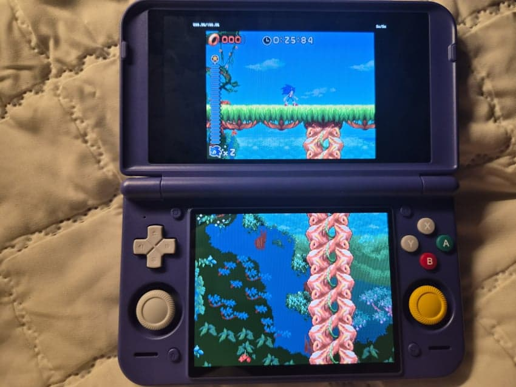
seedlessds의 상하단 동일 사이즈 옵션은 듀라를 위해 만든 옵션이였다. 난 모든기기 알아서 맞춰주는줄
- dc official App
댓글
수집 당시 댓글 60개
한방DAO · 11.15 18:38:22
· 한방DAO · 11.15 18:41:53
· 한방DAO · 11.15 18:47:48
· skyline · 11.15 19:47:18
· 한방DAO · 11.15 19:47:43
노바로입문 · 11.15 18:40:30
주식상혁 · 11.15 18:41:53
뽀삐노바 · 11.15 18:42:28
냥드립 · 11.15 18:43:37
PsVita · 11.15 18:49:23
레갤러1 · 11.15 18:53:58
김치통수집가 · 11.15 18:54:47
덱토르 · 11.15 18:56:48
레붕쿤 · 11.15 19:01:12
레갤러2 · 11.15 19:04:58
JADEITE · 11.15 19:05:19
ㄱㅈ · 11.15 19:09:28
· skyline · 11.15 22:04:46
몬붕이 · 11.15 19:09:30
후회하지마 · 11.15 19:10:41
남구맑음 · 11.15 19:18:06
이번이마지막 · 11.15 19:23:19
레갤러3 · 11.15 19:29:29
dao · 11.15 19:32:55
레갤러4 · 11.15 19:36:12
consouler · 11.15 19:36:21
미ㄴ미ㄴ · 11.15 20:34:14
· 미ㄴ미ㄴ · 11.15 20:34:20
· skyline · 11.15 22:04:22
너의용무는 · 11.15 20:39:31
플투단 · 11.15 21:04:50
하단화면 태평양 개멋짐
Retroid · 11.15 21:24:14
알빵 · 11.15 23:14:27
만채。 · 11.16 02:35:19
난여기서나가야돼 · 11.16 17:54:33
봇치쟝 · 11.17 01:36:17
· ㅇㅇ · 11.17 02:25:27
· 봇치쟝 · 11.17 02:28:00
주소킹 · 11.17 02:14:02
ㅇㅇ · 11.17 02:26:59
흐도울클스비룽 · 11.17 02:41:38
스바루 · 11.17 02:47:23
ㅇㅇ · 11.17 03:15:19
· ㅇㅇ · 11.17 07:47:00
ㅇㅇ · 11.17 03:58:28
ㅇㅇ · 11.17 04:10:43
푸른반복 · 11.17 04:25:39
· ㅇㅇ · 11.17 05:53:27
· ㅇㅇ · 11.17 07:47:39
ㅇㅇ · 11.17 05:50:01
· ㅇㅇ · 11.17 07:47:46
BBBY-4722만원-손절한-아이리 · 11.17 07:43:57
· ㅇㅇ · 11.17 07:47:53
ㅇㅇ · 11.17 07:55:39
ㅇㅇ · 11.17 07:57:22
ㅇㅇ · 11.17 09:13:36
ㅇㅇ · 11.17 09:13:55
· ㅇㅇ · 11.17 10:10:14
ㅇㅇ · 11.17 11:54:21
ㅇㅇ · 11.17 20:24:39